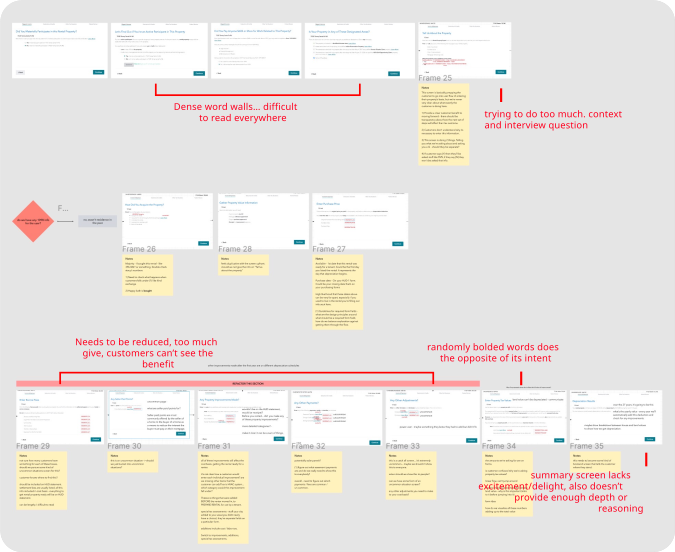
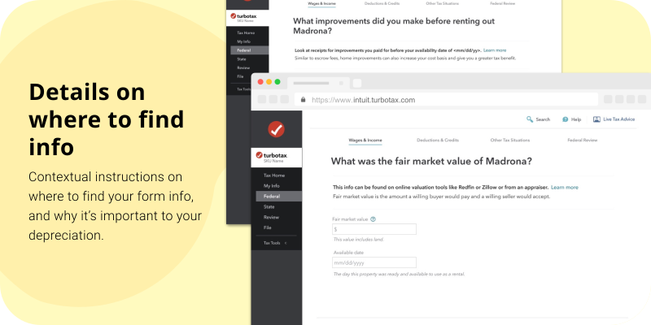
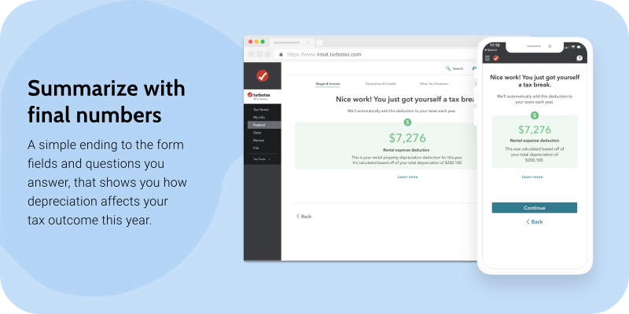
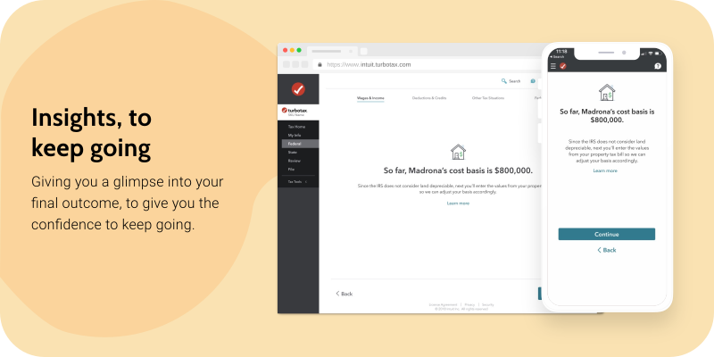
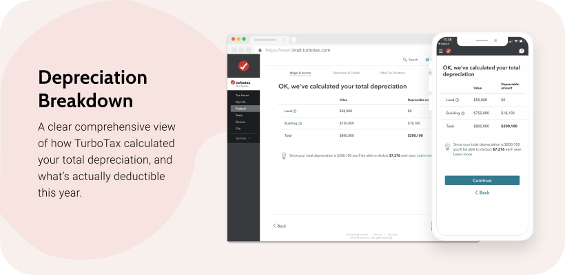

For landlords, depreciation is the loss in their rental property’s value due to wear and tear. Over time, this loss in value can reduce their taxable income which minimizes how much you owe, or maximize the refund they’ll receive.
When people first purchase their new rental property, realtors, or sellers will often refer to depreciation as a “tax write-off,” but it’s never clear how it’ll affect their outcome, and what exactly the tax benefit is. When it’s time to file their tax return, they’re burdened by having to understand how their property purchase depreciates and affects their taxes, all by themselves.
Currently, TurboTax doesn’t do a good job communicating how depreciation works or affects their taxes, leaving customers confused and unsure of themselves. Within 6 days, I led the entire design process from problem definition, scope and requirements, to final design iterations for handoff.

The original experience was built by tax experts whose primary concern was solving for every customer’s edge case. This caused many customers to endure a longer flow than required, littered with extra content, questions, and ultimately screens. For design, there was an opportunity to reduce the complexity, and identify an optimal experience for customers. To kickstart the design process, I started out by doing the following:
I started the design explorations for each of the 3 top pain points, to create an approach to solving each pain point. Here's how I did that for each:
Customers didn't understand where to find exact information they were being asked to enter, and also didn't understand why they needed to enter this information.

Customers didn't understand their final outcome, since the entire experience didn't illustrate how the software arrived at their bottomline.

Customers had a hard time deciphering the meaning behind tax explanations and content. They were burdened with digesting information in the form of dense paragraphs and technical language.

With 2 more days allotted for the design work, our team felt confident in the enhancements I proposed. It ticked all the boxes:
At the same time, I felt that the customer needed a more detailed explanation of how we go to their total depreciation amount, and how it will be broken out over the next 27.5 years (the IRS’ definition of a property’s usable lifespan). I proposed sketches to the rest of the team, to get their thoughts on the idea. Within less than a day, we held another team sync to review the final design, and incorporated this new idea.

With such a quick turnaround time of 6 days, I made sure to keep development informed about the design progress. This helps ensure that there aren’t any surprises when the design reaches development, and gives me the opportunity to listen to any red flags, or feedback they may have. Once we finalized the design, I prepared my Figma files for our development team.
On the 2nd to last day of our design timeline, I held a deep dive design session with our dev lead. We used this time to discuss the documentation I’d added for components I referenced while designing, the logic within the user flow, and any open questions.
Investing in simplified tax experiences for rental property owners helps the company attract and retain new customer buckets. With the time and effort spent in just 6 short days, I was able to reduce cognitive load by refactoring the content and cutting down required fields/screens that the customer had to face. Overall this contributed to our growth initiatives to gradually redesign all of the special scenarios in the TurboTax Premier product.
In the upcoming 2020 tax season, our team will continue to monitor time to complete, contacts, searches, and abandonment to metrically understand how these design enhancements improved the experience.
This project taught me a lot about moving fast, with attention to detail. When working in such a technical space that can also have a detrimental impact on a customer’s final financial outcome, you can’t afford to overlook the need for tax accuracy. This experience really helped me grow my interaction and information architecture skills. Here are my biggest takeaways: